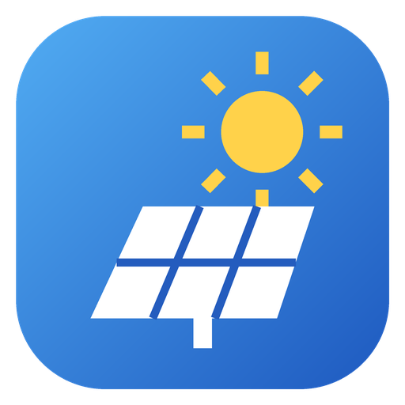

Solaire estime combien de panneaux tu peux poser (toiture, sol, ombrière), les démarches d'urbanisme et la production. C'est une estimation : à confirmer par un relevé sur site et auprès de la mairie.

SolaireSolaire estime combien de panneaux tu peux poser (toiture, sol, ombrière), les démarches d'urbanisme et la production. C'est une estimation : à confirmer par un relevé sur site et auprès de la mairie.